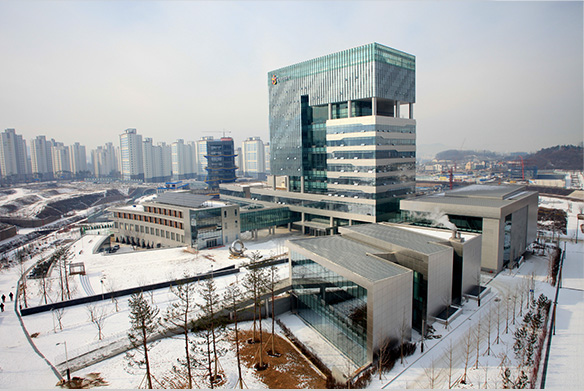

HOME > 시설안내 > 본사안내
본사안내

- 주소
강원도 원주시 세계로 10 (우) 26464 - 대표전화
033) 378-3000
찾아오시는 길
| 대중교통안내 | |
|---|---|
| 원주 시외 • 고속버스 터미널 건너편 |
16번, 86번 버스 승차 → 한국관광공사 하차 (도보 1분) |
| 100번 버스 승차 → 국민건강보험공단 하차 (도보 1분) | |
| 원주역 | 86번 버스 승차 → 한국관광공사 하차 |
| 반곡역 | 도보 5분 (1일 상행, 하행 기차 각 4회 운행) |
| 자동차 이용 안내 | |
|---|---|
| 중부고속도로 | 중부고속도로 → 호법JC → 영동고속도로 → 문막TG → 건동사거리 우회전 → 반곡교차로 혁신도시 방면 좌회전 → 삼생사거리 반곡역 방면 우회전1.2KM |
| 경부고속도로 | 경부고속도로 → 신갈JC → 영동고속도로 → 문막TG → 건동사거리 우회전 → 반곡교차로 혁신도시 방면 좌회전 → 삼생사거리 반곡역 방면 우회전1.2KM |